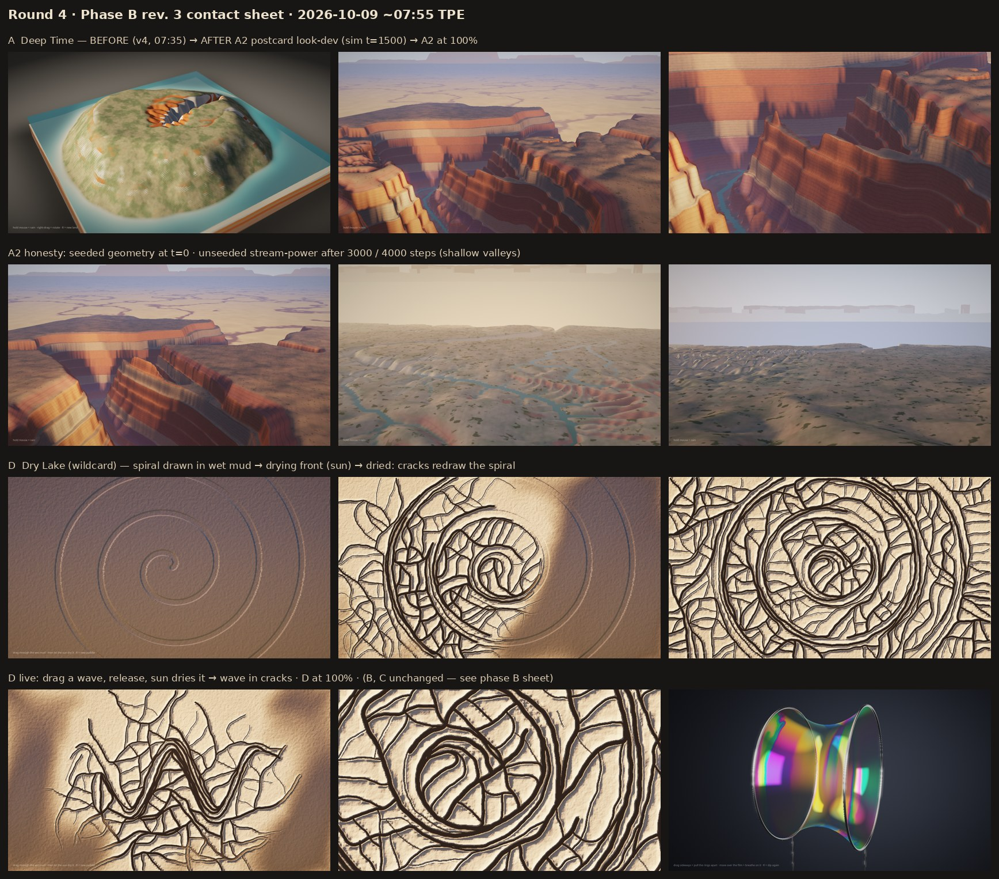
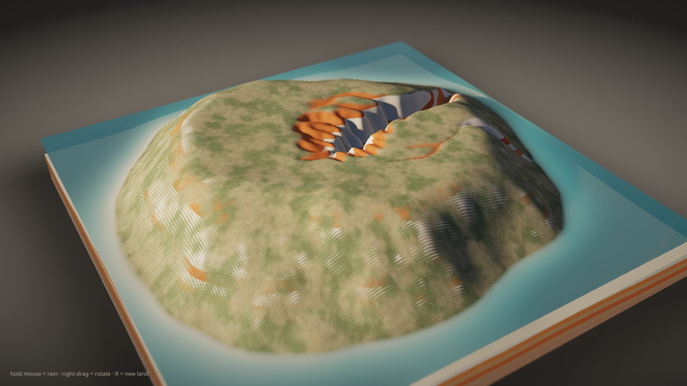
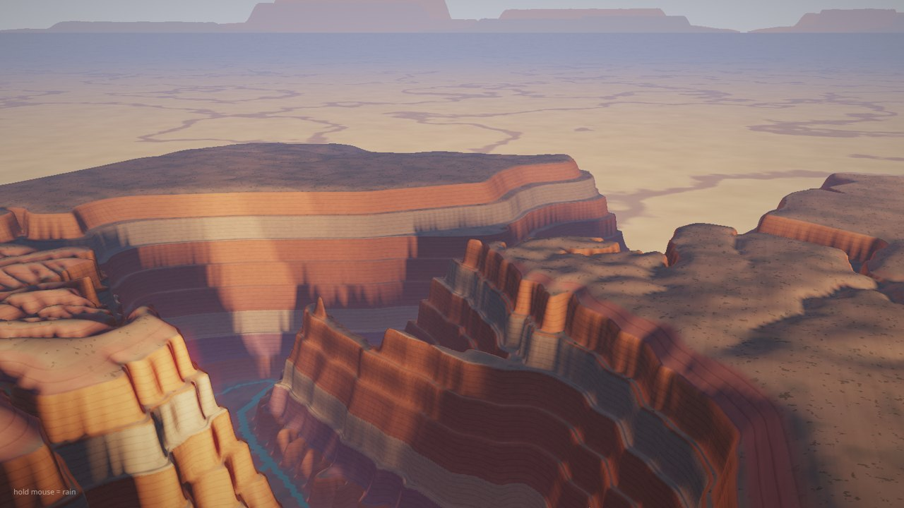
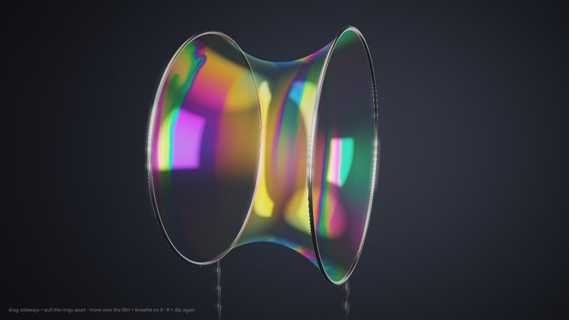
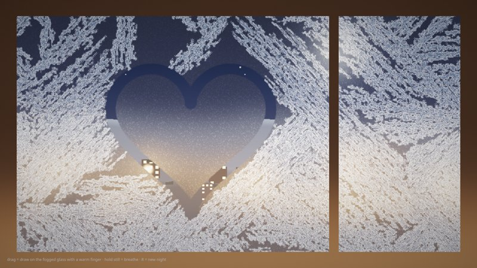
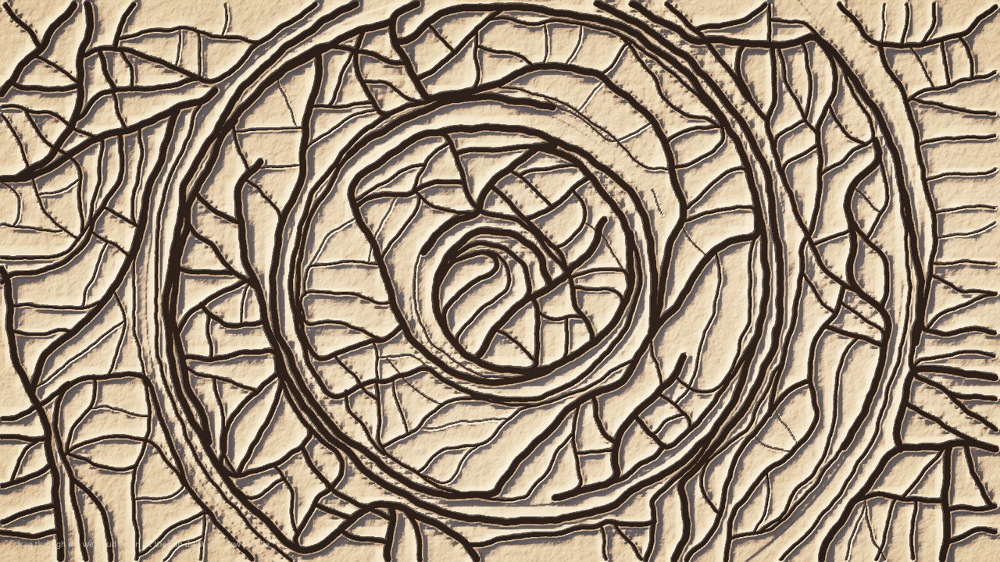
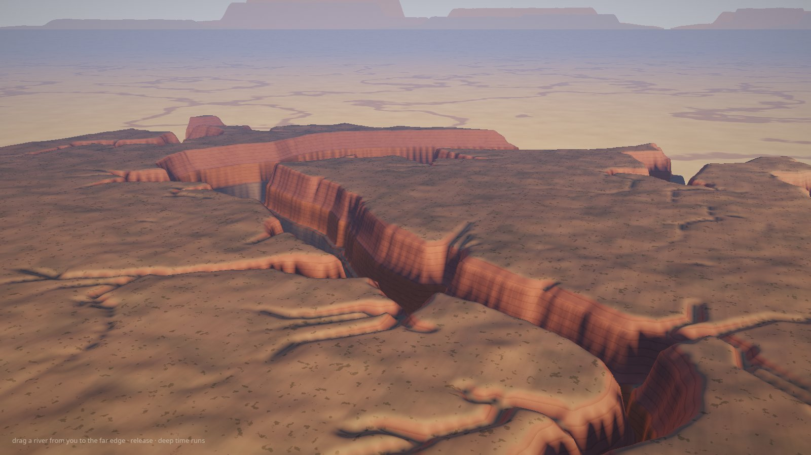

Round 4 · 原型 Prototypes (Phase B rev. 3: + A2 look-dev, + D wildcard)
桌面版 Chrome 建議。每個原型都是即時模擬，截圖來自 headless Chrome 的固定步數畫格。Desktop Chrome recommended. Each is a live simulation; stills are deterministic headless frames (?shot=1&t=…).

Earlier sheet: phase B rev. 2 · Evaluations: EVALUATIONS.md


A · 雨刻 Deep Time
按住滑鼠下雨：水自己找路，切穿藏著彩色岩層的台地，泥沙沖進海裡。Hold the mouse to rain on a tableland; water carves a gorge through hidden strata (GPU stream-power landscape evolution: drainage accumulation + incision by strata hardness; ?model=pipe = shallow-water variant). Right-drag rotates, R = new land.

A2 · 雨刻 Deep Time — 明信片 look-dev
同一個侵蝕模型，換成站在峽谷邊緣的地平線視角：黃昏斜陽、層層岩壁、谷底的河。Look-dev spike for A: rim-level horizon view, golden-hour sun, stair-step strata cliffs, sky and distant buttes, river ribbon. The canyon network is seeded and the stream-power sim refines it (honest caveat in EVALUATIONS.md). Hold mouse = rain.


B · 皂膜 Plateau
左右拖曳把兩個圈拉開：肥皂膜的腰越來越細，到臨界比例的那一瞬間「啪」地斷成兩片。Drag sideways to pull two rings apart; the soap-film catenoid thins and snaps at h/R ≈ 1.3255 into two drum films. Spectral thin-film interference. R = dip again.

C · 霜窗 Frost Window
在起霧的窗上用手指畫畫；冰花從窗框長出來，繞過你畫的線。Draw on a fogged night window; six-fold frost ferns grow from the frame and stop at your lines. R = new night.

D · 龜裂 Dry Lake wildcard
在濕泥上用手指畫一個漩渦，放開讓太陽曬乾：裂縫會照著你畫的樣子裂開。泥巴記得你怎麼攪過它。Draw in wet mud, let go, and the sun (your cursor) dries it. The crack network re-draws your gesture, because pastes remember flow (Nakahara & Matsuo). R = new puddle.
▶ Live · before · drying front



A3 · Canyon from your gesture implicit stream-power test
在高原上隨手畫一條河，放開：深時讓它自己切成峽谷。Gesture-only seed (shallow groove + rain on the stroke), then Braun & Willett implicit stream-power on the CPU (256², ~22 ms/step, ~5 s). No hand-coded canyon. Verdict: fully emergent is feasible in V1.
▶ Live · seed · after · control (no gesture) · sheet